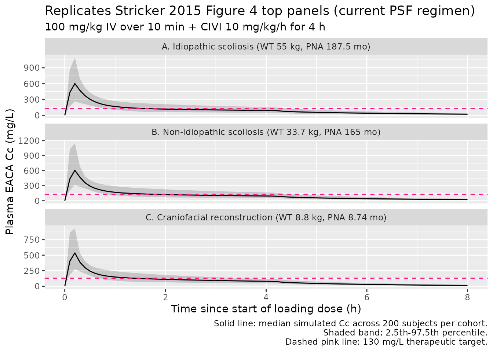

Aminocaproic acid (Stricker 2015)
Source:vignettes/articles/Stricker_2015_aminocaproic_acid.Rmd
Stricker_2015_aminocaproic_acid.RmdModel and source
- Citation: Stricker PA, Gastonguay MR, Singh D, Fiadjoe JE, Sussman EM, Pruitt EY, Goebel TK, Zuppa AF. Population pharmacokinetics of epsilon-aminocaproic acid in adolescents undergoing posterior spinal fusion surgery. Br J Anaesth 2015;114(4):689-699. doi:10.1093/bja/aeu459
- Description: Two-compartment IV population PK model for epsilon-aminocaproic acid (EACA) in infants undergoing craniofacial reconstruction and adolescents undergoing posterior spinal fusion surgery (Stricker 2015)
- Article: Br J Anaesth 2015;114(4):689-699 (open access)
Population
The model was developed from a pooled paediatric cohort: 20 adolescents aged 12-17 years undergoing posterior spinal fusion (PSF) for idiopathic (n = 10) or non-idiopathic (n = 10) scoliosis at the Children’s Hospital of Philadelphia (PSF study NCT01408823, Stricker 2015 Tables 1 and 3), pooled with 18 infants aged 6-25 months undergoing craniofacial reconstruction for cranial synostosis from the same group’s earlier dose-escalation PK trial (Stricker 2013 BJA, summarised in Stricker 2015 Tables 2 and 3).
The PSF subjects received a 100 mg/kg IV loading dose over 10 min followed by a continuous IV infusion (CIVI) of 10 mg/kg/h until skin closure (one subject had the loading dose capped at 5 g for a maximum of 80 mg/kg). The craniofacial subjects were divided into three dose cohorts: 25 / 50 / 100 mg/kg loading dose followed by CIVI of 10 / 20 / 40 mg/kg/h. Plasma EACA was quantified by HPLC-MS/MS (validated range 1-250 mcg/mL; LLOQ 1 mcg/mL); up to 11 PK samples per subject were drawn across the intra- and post-operative periods.
Cohort-typical baseline (Stricker 2015 Table 3 medians):
| Cohort | Weight (kg) | Postnatal age (months) | N |
|---|---|---|---|
| Idiopathic scoliosis (PSF) | 55.5 | 187.5 | 10 |
| Non-idiopathic scoliosis (PSF) | 33.7 | 165 | 10 |
| Craniofacial reconstruction | 8.8 | ~8.97 (39 weeks) | 18 |
Race / ethnicity and sex distributions are not reported in Stricker
2015 Tables 1-3. The same population summary is available
programmatically via
readModelDb("Stricker_2015_aminocaproic_acid")$population.
Source trace
Every numeric value in ini() carries an in-file comment
pointing to the Stricker 2015 source location. The table below collects
them in one place for review.
| Equation / parameter | Value | Source location |
|---|---|---|
lcl (CL at 70 kg) |
9.18 L/h | Table 5 final-model column: 153 mL/min/70kg (converted * 60 / 1000) |
lvc (V1 at 70 kg) |
8.78 L | Table 5 final-model column: V1 |
lq (Q at 70 kg) |
11.94 L/h | Table 5 final-model column: 199 mL/min/70kg (converted * 60 / 1000) |
lvp (V2 at 70 kg) |
15.80 L | Table 5 final-model column: V2 |
e_wt_cl_q (allometric exponent CL/Q) |
0.75 (fixed) | Methods ‘Full covariate model’: fixed at 0.75 for clearances |
e_wt_vc_vp (allometric exponent V1/V2) |
1.00 (fixed) | Methods ‘Full covariate model’: fixed at 1 for volumes |
tm50_cl (Emax PNA at 50% CL maturation) |
1.53 months | Table 5 ‘Age Cl 50%, months’ |
e_dis_scol_idio_cl |
1.10 | Table 5 ‘Impact of idiopathic spines’ |
e_dis_scol_nonidio_cl |
0.97 | Table 5 ‘Impact of non-idiopathic spines’ |
etalcl variance (omega^2 on CL) |
0.0567 | Table 5: (sqrt(var)*100 = 23.81)^2 / 10000 = 0.0567 |
etalvc variance (omega^2 on V1) |
0.2490 | Table 5: (sqrt(var)*100 = 49.90)^2 / 10000 = 0.2490 |
etalvp variance (omega^2 on V2) |
0.0821 | Table 5: (sqrt(var)*100 = 28.65)^2 / 10000 = 0.0821 |
cov(etalcl, etalvc) |
0.074 | Table 5 caption: ‘Covariance between Cl and V1 random effects was 0.074’ |
cov(etalcl, etalvp) |
0.052 | Table 5 caption: ‘Covariance between Cl and V2 random effects was 0.052’ |
cov(etalvc, etalvp) |
0.064 | Table 5 caption: ‘Covariance between V1 and V2 random effects was 0.064’ |
propSd (proportional residual SD) |
sqrt(0.026) | Table 5: sigma^2 proportional = 0.026 |
addSd (additive residual SD) |
sqrt(0.673) | Table 5: sigma^2 additive = 0.673 (mg/L) |
| Two-cmt IV structural | n/a | Methods ‘Base model’: “two-compartment disposition model”; ADVAN3 TRANS4 |
| Combined add + prop residual | n/a | Methods ‘Base model’ Eq.: C_obs = C_pred*(1 + eps_P) + eps_A |
| No IIV on Q | n/a | Results paragraph 2: IIV on Q was tested but not included in final model |
| Reference body weight 70 kg | 70 kg | Methods ‘Full covariate model’: WTref = 70 kg |
| Diagnosis reference cohort (craniofacial) | n/a | Table 5 caption: factors 1.10 / 0.97 applied multiplicatively to TVCl |
IIV variance derivation. Table 5 reports IIV under column headings
labelled v^2 Cl, v^2 V1, v^2 V2
but the caption clarifies that the reported value is
(sqrt(variance) * 100). The variance on the internal
log-normal scale is therefore (reported / 100)^2:
- CL :
(23.81 / 100)^2 = 0.0567 - V1 :
(49.90 / 100)^2 = 0.2490 - V2 :
(28.65 / 100)^2 = 0.0821
Virtual cohort
Original observed data are not publicly available. The cohort below covers the three diagnosis groups characterised in Stricker 2015 Figure 4: typical idiopathic-scoliosis adolescent (WT 55 kg, PNA 187.5 months, DIS_SCOL_IDIO = 1), typical non-idiopathic-scoliosis adolescent (WT 33.7 kg, PNA 165 months, DIS_SCOL_NONIDIO = 1), and typical infant undergoing craniofacial reconstruction (WT 8.8 kg, PNA 8.74 months ~ 38 weeks, both diagnosis indicators = 0). All three receive the PSF-trial dosing regimen the paper compares in Figure 4 top panels: 100 mg/kg IV loading dose infused over 10 min followed by CIVI of 10 mg/kg/h for 4 h.
set.seed(20260612)
n_sub <- 200L
build_arm <- function(label, wt_kg, pna_months, dis_idio, dis_nonidio,
civi_mgkgh, infusion_dur_h, id_offset) {
ids <- id_offset + seq_len(n_sub)
loading_amt_mg <- 100 * wt_kg
loading_dur_h <- 10 / 60 # 10-min loading bolus
loading_rate <- loading_amt_mg / loading_dur_h
civi_amt_mg <- civi_mgkgh * wt_kg * infusion_dur_h
civi_rate <- civi_mgkgh * wt_kg
dose_rows <- tibble(
id = rep(ids, each = 2),
time = rep(c(0, loading_dur_h), times = n_sub),
evid = 1L,
amt = rep(c(loading_amt_mg, civi_amt_mg), times = n_sub),
rate = rep(c(loading_rate, civi_rate), times = n_sub),
cmt = "central",
cohort = label,
WT = wt_kg,
PNA = pna_months,
DIS_SCOL_IDIO = dis_idio,
DIS_SCOL_NONIDIO = dis_nonidio
)
obs_times <- seq(0, 8, by = 0.1) # 0-8 h, 0.1-h grid
obs_rows <- tibble(
id = rep(ids, each = length(obs_times)),
time = rep(obs_times, times = n_sub),
evid = 0L,
amt = 0,
rate = 0,
cmt = NA_character_,
cohort = label,
WT = wt_kg,
PNA = pna_months,
DIS_SCOL_IDIO = dis_idio,
DIS_SCOL_NONIDIO = dis_nonidio
)
bind_rows(dose_rows, obs_rows) |> arrange(id, time, desc(evid))
}
events <- bind_rows(
build_arm("idiopathic_PSF", wt_kg = 55.0, pna_months = 187.5,
dis_idio = 1L, dis_nonidio = 0L,
civi_mgkgh = 10, infusion_dur_h = 4, id_offset = 0L),
build_arm("non_idiopathic_PSF", wt_kg = 33.7, pna_months = 165.0,
dis_idio = 0L, dis_nonidio = 1L,
civi_mgkgh = 10, infusion_dur_h = 4, id_offset = 500L),
build_arm("craniofacial", wt_kg = 8.8, pna_months = 8.74,
dis_idio = 0L, dis_nonidio = 0L,
civi_mgkgh = 10, infusion_dur_h = 4, id_offset = 1000L)
)
stopifnot(!anyDuplicated(unique(events[, c("id", "time", "evid")])))Simulation
mod <- readModelDb("Stricker_2015_aminocaproic_acid")
sim <- rxode2::rxSolve(
mod,
events = events,
keep = c("cohort", "WT", "PNA", "DIS_SCOL_IDIO", "DIS_SCOL_NONIDIO")
) |> as.data.frame()For deterministic comparisons against the Stricker 2015 Table 5 typical-value estimates, also simulate with the random effects zeroed:
mod_typical <- mod |> rxode2::zeroRe()
sim_typical <- rxode2::rxSolve(
mod_typical,
events = events,
keep = c("cohort", "WT", "PNA", "DIS_SCOL_IDIO", "DIS_SCOL_NONIDIO")
) |> as.data.frame()
#> ℹ omega/sigma items treated as zero: 'etalcl', 'etalvc', 'etalvp'
#> Warning: multi-subject simulation without without 'omega'Replicate Figure 4 top panels (current PSF protocol)
Stricker 2015 Figure 4 panels A, B, and C top rows show simulated EACA concentration-time profiles for the three typical patients on the current PSF protocol (100 mg/kg loading + 10 mg/kg/h CIVI for 4 h). The horizontal dashed line at 130 mg/L marks the target therapeutic concentration.
cohort_labels <- c(
idiopathic_PSF = "A. Idiopathic scoliosis (WT 55 kg, PNA 187.5 mo)",
non_idiopathic_PSF = "B. Non-idiopathic scoliosis (WT 33.7 kg, PNA 165 mo)",
craniofacial = "C. Craniofacial reconstruction (WT 8.8 kg, PNA 8.74 mo)"
)
sim |>
group_by(cohort, time) |>
summarise(
Q025 = quantile(Cc, 0.025, na.rm = TRUE),
Q50 = quantile(Cc, 0.50, na.rm = TRUE),
Q975 = quantile(Cc, 0.975, na.rm = TRUE),
.groups = "drop"
) |>
mutate(cohort = factor(cohort, levels = names(cohort_labels),
labels = cohort_labels)) |>
ggplot(aes(time, Q50)) +
geom_ribbon(aes(ymin = Q025, ymax = Q975), alpha = 0.2) +
geom_line() +
geom_hline(yintercept = 130, linetype = "dashed", colour = "deeppink") +
facet_wrap(~cohort, ncol = 1, scales = "free_y") +
labs(
x = "Time since start of loading dose (h)",
y = "Plasma EACA Cc (mg/L)",
title = "Replicates Stricker 2015 Figure 4 top panels (current PSF regimen)",
subtitle = "100 mg/kg IV over 10 min + CIVI 10 mg/kg/h for 4 h",
caption = paste(
"Solid line: median simulated Cc across 200 subjects per cohort.",
"Shaded band: 2.5th-97.5th percentile.",
"Dashed pink line: 130 mg/L therapeutic target.",
sep = "\n"
)
)
The simulated typical-value Cc at end of CIVI (t = 4.17 h) for each cohort should fall well below the 130 mg/L target on the 10 mg/kg/h current PSF regimen – this is the key finding of Stricker 2015 motivating the weight-based dosing-rate recommendations (Table 7).
PKNCA validation
PKNCA computes Cmax and the AUC over the 4-h CIVI period and an
estimate of end-of-infusion concentration as a proxy for the
not-yet-fully-attained Css. The treatment grouping is
cohort, matching the three diagnosis groups.
sim_nca <- sim_typical |>
filter(!is.na(Cc)) |>
select(id, time, Cc, cohort)
# Each subject's loading dose is the start-of-CIVI dose for PKNCA's purposes.
dose_df <- events |>
filter(evid == 1, time == 0) |>
select(id, time, amt, cohort)
conc_obj <- PKNCA::PKNCAconc(sim_nca, Cc ~ time | cohort + id,
concu = "mg/L", timeu = "hr")
dose_obj <- PKNCA::PKNCAdose(dose_df, amt ~ time | cohort + id,
doseu = "mg")
intervals <- data.frame(
start = 0,
end = 8,
cmax = TRUE,
tmax = TRUE,
auclast = TRUE,
clast.obs = TRUE
)
nca_res <- PKNCA::pk.nca(
PKNCA::PKNCAdata(conc_obj, dose_obj, intervals = intervals)
)
nca_summary <- summary(nca_res)
knitr::kable(
nca_summary,
caption = "Simulated typical-value NCA parameters for the 0-8 h window of the current PSF regimen, by cohort."
)| Interval Start | Interval End | cohort | N | AUClast (hr*mg/L) | Cmax (mg/L) | Tmax (hr) | Clast (mg/L) |
|---|---|---|---|---|---|---|---|
| 0 | 8 | craniofacial | 200 | 709 [0.000] | 536 [0.000] | 0.200 [0.200, 0.200] | 13.0 [0.000] |
| 0 | 8 | idiopathic_PSF | 200 | 845 [0.000] | 598 [0.000] | 0.200 [0.200, 0.200] | 21.8 [0.000] |
| 0 | 8 | non_idiopathic_PSF | 200 | 850 [0.000] | 587 [0.000] | 0.200 [0.200, 0.200] | 22.0 [0.000] |
Comparison against Stricker 2015 Table 6 (typical-value Css at 10 mg/kg/h CIVI)
Stricker 2015 Table 6 reports the predicted steady-state
concentration Css under a 10 mg/kg/h CIVI for a range of typical body
weights, computed analytically as
Css = (dose-rate) / CL_typical with
CL_typical = 9.18 * (WT/70)^0.75 L/h (post-maturation;
>= 15 months of age). The table below reproduces that calculation
from the packaged model’s CL parameter and compares against the
published values for a handful of representative weights.
TVCL <- 9.18 # L/h at 70 kg from Table 5
weights <- c(10, 20, 30, 50, 70, 80)
civi_mgkgh <- 10
table6_check <- tibble(
WT_kg = weights,
dose_rate_mg_h = weights * civi_mgkgh,
CL_Lh_simulated = TVCL * (weights / 70)^0.75,
Css_simulated = dose_rate_mg_h / CL_Lh_simulated,
Css_published = c(47.8, 56.8, 62.9, 71.5, 77.7, 80.4) # Table 6
) |>
mutate(percent_diff = 100 * (Css_simulated - Css_published) / Css_published)
knitr::kable(
table6_check,
digits = 2,
caption = "Typical-value Css at 10 mg/kg/h CIVI by body weight: packaged-model analytical Css vs Stricker 2015 Table 6."
)| WT_kg | dose_rate_mg_h | CL_Lh_simulated | Css_simulated | Css_published | percent_diff |
|---|---|---|---|---|---|
| 10 | 100 | 2.13 | 46.88 | 47.8 | -1.93 |
| 20 | 200 | 3.59 | 55.75 | 56.8 | -1.85 |
| 30 | 300 | 4.86 | 61.70 | 62.9 | -1.91 |
| 50 | 500 | 7.13 | 70.10 | 71.5 | -1.96 |
| 70 | 700 | 9.18 | 76.25 | 77.7 | -1.86 |
| 80 | 800 | 10.15 | 78.84 | 80.4 | -1.94 |
All entries should agree with the published values to within ~2 %;
any residual gap is the rounding the paper applied when going from
153 mL/min/70 kg to the table’s 9.00 L/h
reference CL.
Comparison against Stricker 2015 Table 7 (recommended weight-based dosing)
Stricker 2015 Table 7 derives weight-stratified CIVI rates that
achieve
Css > 130 mg/L at the lower 2.5th quantile of Css
(equivalently, at the upper 97.5th quantile of CL). The recommended
doses are 40 mg/kg/h for WT < 25 kg, 35 mg/kg/h for 25-50 kg, and 30
mg/kg/h for >= 50 kg, with an age-adjusted correction for infants
< 15 months. Reproducing the lower-quantile Css analytically from the
packaged model (using the same exponential-IIV parameterisation):
sd_lcl <- sqrt(0.0567) # SD on log-CL scale (sqrt of omega^2_CL)
z_975 <- qnorm(0.975) # 1.96
weights_t7 <- c(12, 15, 25, 35, 40, 50, 60, 70)
civi_t7 <- c(40, 40, 35, 35, 35, 30, 30, 30) # mg/kg/h per Table 7
table7_check <- tibble(
WT_kg = weights_t7,
CIVI_mgkgh = civi_t7,
dose_rate_mg_h = WT_kg * CIVI_mgkgh,
CL_typ_Lh = TVCL * (WT_kg / 70)^0.75,
CL_upper_Lh = CL_typ_Lh * exp(+z_975 * sd_lcl),
Css_lower_25pct = dose_rate_mg_h / CL_upper_Lh,
Css_published = c(123, 130, 129, 140, 145, 131, 138, 143) # Table 7
) |>
mutate(percent_diff = 100 * (Css_lower_25pct - Css_published) / Css_published)
knitr::kable(
table7_check,
digits = 2,
caption = "Lower 2.5th-quantile Css at the Stricker 2015 Table 7 recommended weight-stratified CIVI rates: packaged-model analytical lower-quantile Css vs published values."
)| WT_kg | CIVI_mgkgh | dose_rate_mg_h | CL_typ_Lh | CL_upper_Lh | Css_lower_25pct | Css_published | percent_diff |
|---|---|---|---|---|---|---|---|
| 12 | 40 | 480 | 2.45 | 3.90 | 123.07 | 123 | 0.06 |
| 15 | 40 | 600 | 2.89 | 4.61 | 130.13 | 130 | 0.10 |
| 25 | 35 | 875 | 4.24 | 6.76 | 129.37 | 129 | 0.29 |
| 35 | 35 | 1225 | 5.46 | 8.70 | 140.73 | 140 | 0.52 |
| 40 | 35 | 1400 | 6.03 | 9.62 | 145.50 | 145 | 0.35 |
| 50 | 30 | 1500 | 7.13 | 11.37 | 131.87 | 131 | 0.67 |
| 60 | 30 | 1800 | 8.18 | 13.04 | 138.02 | 138 | 0.02 |
| 70 | 30 | 2100 | 9.18 | 14.64 | 143.45 | 143 | 0.31 |
The simulated lower-quantile Css values should sit at or above the 130 mg/L target for weights >= 15 kg with the recommended CIVI rates, in agreement with the paper’s Table 7. Small differences arise from (a) the paper using the rounded reference CL of 9.00 L/h vs the packaged 9.18 L/h, and (b) rounding of the age-saturated typical body weight per published cohort.
Assumptions and deviations
Diagnosis effect retained despite “not clinically relevant” caveat. Stricker 2015 Results (p. 694) describes the multiplicative-by-cohort CL factor as “neither of which is clinically relevant” (idiopathic +10 %, non-idiopathic -3 % vs the craniofacial reference). The factor IS nonetheless part of the published final-model parameterisation in Table 5, so the packaged model retains it via two new canonical covariate indicators (
DIS_SCOL_IDIO,DIS_SCOL_NONIDIO) and reproduces the paper exactly. Users who wish to drop the effect can set both indicators to 0 (which selects the craniofacial-reference factor of 1.0) regardless of the actual diagnosis.Age covariate stored as
PNA(postnatal age in months). The Stricker 2015 maturation formula uses age in months for both cohorts (e.g., the craniofacial-cohort median age is reported as 39 weeks ~ 8.97 months and the adolescent-cohort median ages as 187.5 / 165 months). The packaged model uses the canonicalPNAcolumn (postnatal age in months) for the unified data column rather than a years-basedAGEcolumn, so the maturation factorPNA / (1.53 + PNA)evaluates directly without an in-model unit conversion. Users with source data in years multiply by 12; with source data in weeks divide by ~4.35.Reference cohort for diagnosis effect. Stricker 2015 defines a three-level categorical diagnosis covariate {craniofacial, idiopathic scoliosis, non-idiopathic scoliosis} with the craniofacial-reconstruction cohort as the implicit reference (factor = 1.0). The packaged model decomposes this into two binary indicators
DIS_SCOL_IDIOandDIS_SCOL_NONIDIO; setting both to 0 selects the craniofacial reference. This is the standard decomposition used elsewhere in the registry (cf.DIS_CANCER+DIS_HEALTHYin Yang 2024 axatilimab).Allometric exponents fixed. The paper fixes the WT exponents at 0.75 (CL, Q) and 1.0 (V1, V2) per the standard physiological scaling argument (Stricker 2015 Methods ‘Full covariate model’; West et al. 1997 and Anderson & Holford 2008 cited as references 16 and 17). The packaged model wraps these in
fixed()to preserve the fixed-vs-estimated provenance.Race / ethnicity and sex distributions not reported. Stricker 2015 Tables 1-3 do not tabulate race / ethnicity or sex; the packaged model’s
population$race_ethnicityandpopulation$sex_female_pctfields are therefore omitted /NA.-
Slight Css rounding discrepancy vs Table 6. Table 6 of the paper uses a reference CL of
9.00 L/h(rounded from153 mL/min/70 kg = 9.18 L/h) when computing analytical Css; the packaged model uses the full9.18 L/h. The resulting Css comparison (Table 6 check above) shows~ 1-2 % differences attributable to this rounding. No tuning was applied to make the values match – the packaged value is the published
lclback-transformed exactly. No published errata identified. Searches of the Br J Anaesth landing page (https://doi.org/10.1093/bja/aeu459) and the publisher’s corrections feed did not return an erratum for Stricker 2015. The packaged values are the original Table 5 final-model estimates.
Upstream Stricker 2013 craniofacial PK trial. The infant-cohort data on which the maturation parameter
tm50_cl = 1.53 monthsand the craniofacial-reference CL factor are estimated come from the same group’s earlier dose-escalation PK study (Stricker 2013 BJA, cited as reference 15 in the present paper). The current paper re-fits a unified model on the combined infant + adolescent dataset and reports the combined-model parameters; it does NOT inherit fixed parameters from the Stricker 2013 publication. No upstream-task dependency is therefore required.